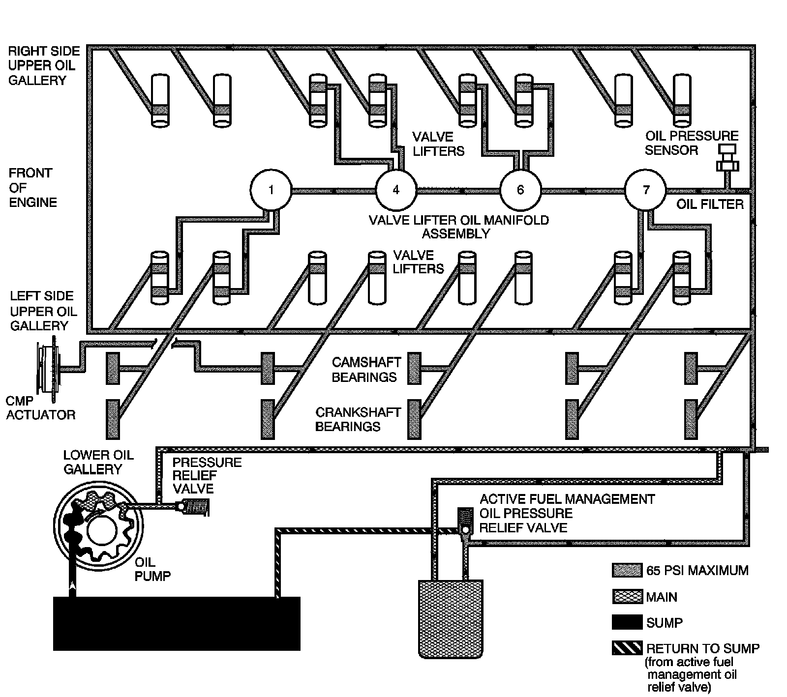

Lubrication Description - Main Pressure Above 55 psi with Cylinder Deactivation (Active Fuel Management) On
Lubrication Description - Main Pressure Above 55 psi with Cylinder Deactivation (Active Fuel Management) On (RPO L76/L92)

Engine lubrication is supplied by a gerotor type oil pump assembly. The oil pump is mounted on the front of the engine block and driven directly by the crankshaft sprocket. The pump gears rotate and draw oil from the oil pan sump through a pick-up screen and pipe. The oil is pressurized as it passes through the pump and is sent through the engine block lower oil gallery. Contained within the oil pump assembly is a pressure relief valve that maintains oil pressure within a specified range.
Pressurized oil is directed through the engine block lower oil gallery to the full flow oil filter where harmful contaminants are removed. A bypass valve is incorporated into the oil filter, which permits oil flow in the event the filter becomes restricted. A second valve, the active fuel management oil pressure relief valve is incorporated into the oil pan. The active fuel management oil pressure relief valve limits oil pressure directed to the upper oil galleries and valve lifter oil manifold assembly to 379-517 kPa (55-75 psi) maximum. When main oil pressure exceeds 379 kPa (55 psi), the oil pressure relief valve exhausts excess oil to the sump.
Oil is then directed from the filter to the upper main oil galleries and the valve lifter oil manifold assembly. Oil from the left upper oil gallery is directed to the crankshaft and camshaft bearings. Oil that has entered both the upper main oil galleries also pressurizes the valve lifter assemblies and is then pumped through the pushrods to lubricate the valve rocker arms and valve stems.
An oil passage at camshaft bearing location 2 permits oil flow into the center of the camshaft. Oil enters the camshaft exiting at the front and into the camshaft position (CMP) actuator solenoid valve. The CMP valve spool position is controlled by the engine control module (ECM) and CMP magnet. When commanded by the ECM, the CMP magnet repositions the CMP actuator solenoid valve spool directing pressurized oil into the CMP actuator to control valve timing. Refer to Camshaft Actuator System Description.
Oil returning to the pan is directed by the crankshaft oil deflector. The oil pressure sensor is located at the top rear of the engine.
With active fuel management activated, the ECM commands the 4 solenoids to open, directing oil through the engine block oil galleries to the intake and exhaust valve lifters for cylinders 1, 4, 6, and 7. For RPO L92, active fuel management hardware is present in first design engines. The system is inactive for the 2007 model year. Refer to Cylinder Deactivation (Active Fuel Management) System Description and Camshaft Position Actuator and Solenoid Valve Description.